One case for each p53 pattern, read the way a pathologist reads them: the H&E, the p53 slide with its control lines, the tumor at high magnification. Make your call before you open the answer.
How to use these cases
Look at the slides and the tumor field, then pick the pattern you see
Compare your call with what the software read, nucleus by nucleus
Note what the pathologist checks before signing each one
Case 1
A gynecologic tumor, H&E and p53.
The laboratory stained the p53 slide with the three control lines on the same glass. Look at the whole slides first, then at the tumor nuclei.
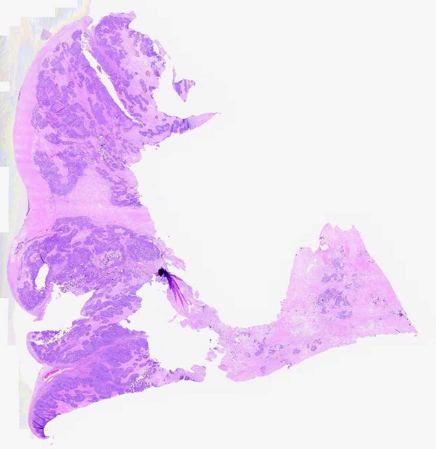
H&EThe tissue, for orientation.
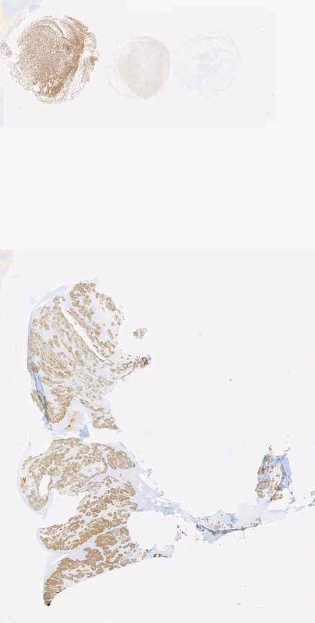
p53 IHCThe three control lines sit at the top of the slide.
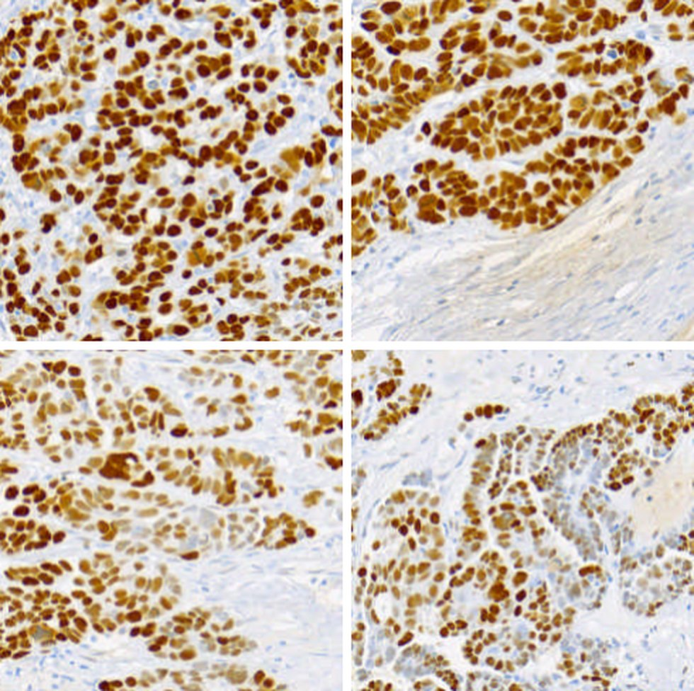
Tumor nuclei, high magnificationFour fields from the tumor region of the p53 slide.
Your call
Which p53 pattern is this?
What the software read
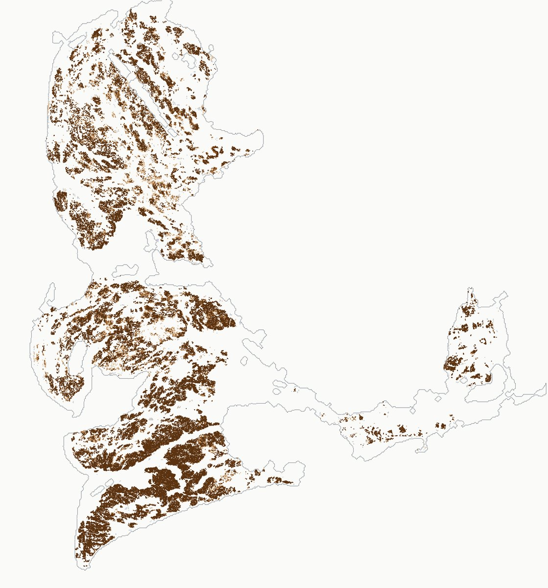
Every tumor nucleus it graded, 65,816 of them, as a dot coloured by grade: dark brown 3+, brown 2+, tan 1+, grey 0. The same case as the sample report.
Overexpression (abnormal pattern)
Grade
Share of tumor nuclei
3+ strong
84 %
2+ moderate
10 %
1+ weak
5 %
0 unstained
1 %
Strong staining in more than nine of every ten tumor nuclei, with a thin margin of moderate and weak ones, read against the overexpression control line on the same slide. The control lines stained as expected, so the grades can be trusted.
What the pathologist checks
The strong staining covers the tumor, not just one hot spot. The dot map shows it does.
The wild-type control line is clearly lighter than the tumor, so this is not a dark run making a wild-type look strong.
Non-tumor cells in the field are unstained or weak, as expected.
Case 2
Another gynecologic tumor, same two stains.
This one looks different from the first at a glance. Take your time on the tumor nuclei before you decide.
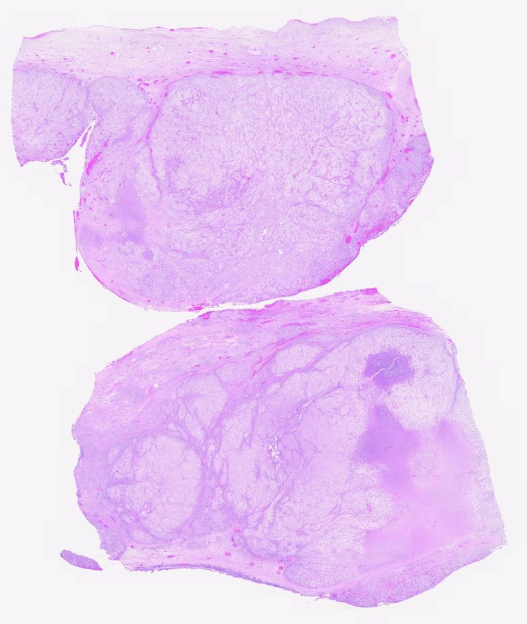
H&E
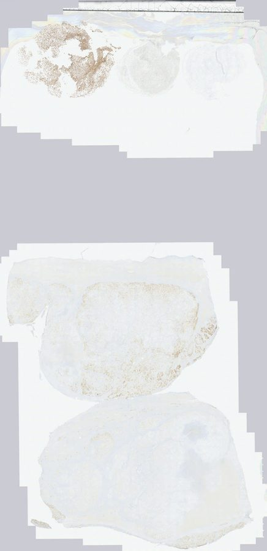
p53 IHCControl lines at the top.
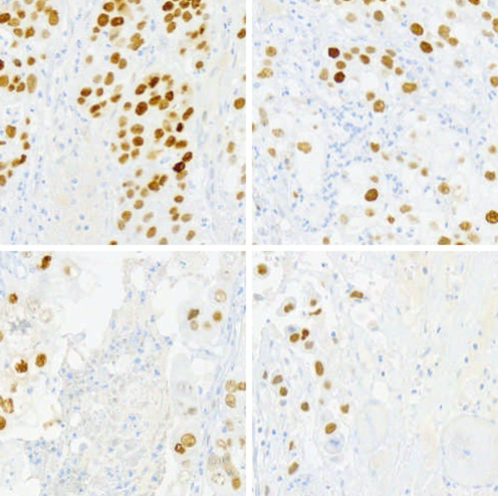
Tumor nuclei, high magnificationFour fields from the tumor region.
Your call
Which p53 pattern is this?
What the software read
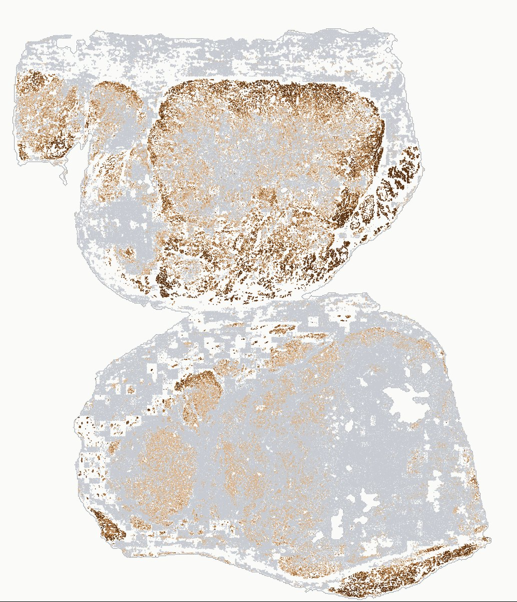
Grey dots dominate, with scattered tan and brown, and a few dark clusters at the edges.
Wild-type
Grade
Share of tumor nuclei
3+ strong
4 %
2+ moderate
6 %
1+ weak
15 %
0 unstained
75 %
Variable intensity from cell to cell, most nuclei unstained, some weak or moderate, a few strong. That mix is the wild-type pattern. On this slide the software also noted that the wild-type control line had stained faintly, and said so on the result, which is exactly the kind of flag the pathologist wants to see.
What the pathologist checks
The strong nuclei are scattered or sit in small clusters, not across the whole tumor. If they covered most of it, this would be an overexpression call.
The unstained majority is not a failed stain: the control lines and the stained minority prove the stain worked.
The faint wild-type control line is worth a look at the glass, since it anchors the weak and moderate grades.
Case 3
A third tumor, and the pattern that is easiest to miss.
Unstained tumor nuclei can mean two very different things. The control lines on the slide decide which.
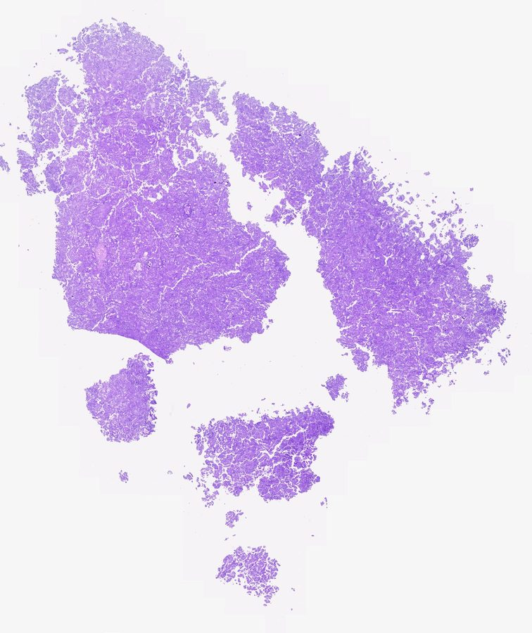
H&E
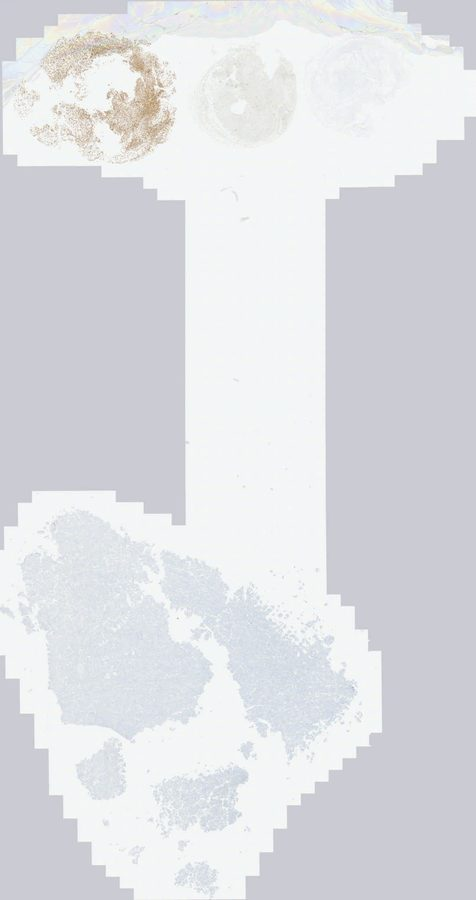
p53 IHCControl lines at the top; the tumor itself looks pale.
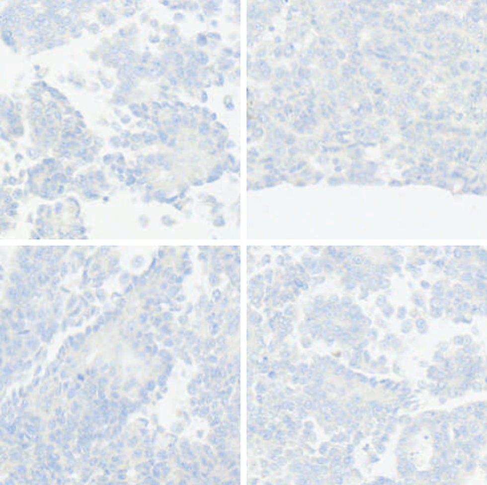
Tumor nuclei, high magnificationBlue counterstain only.
Your call
Which p53 pattern is this?
What the software read
Grey dots only: no tumor nucleus reached even the weak grade.
Null
Grade
Share of tumor nuclei
3+ strong
0 %
2+ moderate
0 %
1+ weak
under 1 %
0 unstained
99 %
No staining in the tumor nuclei while the overexpression and wild-type control lines on the same slide stained normally. That is what makes it a null pattern rather than a stain that failed. Without controls on the glass, this slide and a failed run look the same.
What the pathologist checks
The control lines stained: the overexpression line dark, the wild-type line visibly lighter, the null line clear.
Non-tumor cells on the slide, such as stromal or inflammatory cells, show at least some wild-type staining.
The tumor region is the tumor: an unstained area of stroma would also read as grey dots, which is why the pathologist marks the region.
Three cases from a research cohort, de-identified, read with the PCI-AI platform. Generic case numbers; no patient information appears on this page. Percentages are the shares of graded tumor nuclei as printed on the platform's report. Research use only.
See the software read a case from start to finish.